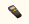
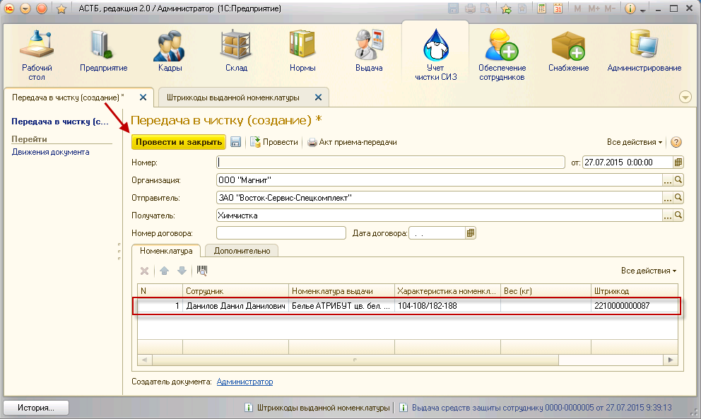

«Найти по штрих коду». В открывшемся окне введите штрих код либо отсканируйте этикетку сканером штрих кода и нажмите кнопку «ОК».
«Найти по штрих коду». В открывшемся окне введите штрих код либо отсканируйте этикетку сканером штрих кода и нажмите кнопку «ОК».Для передачи одежды в чистку зайдите в раздел «Учет чистки СИЗ», «Документы передачи в чистку». Добавьте новый документ, нажав кнопку «Создать». В открывшемся окне, выберите созданную организацию, отправителя (того, кто отдает СИЗ в стирку) и получателя (того, кто занимается непосредственной чисткой).
Для автоматического заполнения табличной части данными с терминала сбора данных (ТСД) в окне создания документа нажмите на кнопку  «Загрузить данные из ТСД», предварительно поместив терминал на базу, подключенную к рабочему компьютеру.
Табличная часть будет заполнена автоматически.
Загруженные в базу данные должны быть проверены на предмет одинаковых штрих кодов (повторное сканирование одного штрих кода), а также на предмет соответствия с отгружаемыми в чистку СИЗ.
Для этого проверьте сформированный список и удалите повторяющиеся строки.
Примечание: штрих код является уникальным значением, заданным для одного изделия. Если сотруднику было выдано несколько одинаковых СИЗ, для них будут сформированы разные штрих коды. Дубли штрих кодов в сформированном списке могут означать, что отсканированный СИЗ был неверно промаркирован – для него была распечатана этикетка с неверным штрих кодом. В таком случае потребуется перемаркировка конкретного СИЗ.
Затем должен быть осуществлен контроль по общему количеству номенклатуры. Для этого сравните внесенные данные по штрих кодам с количеством упакованной номенклатуры. На этом этапе в список следует вручную ввести штрих коды номенклатуры, которая по каким-либо причинам не была отсканирована (износ, загрязнение и проч.).
Примечание: чтобы в табличной части был заполнен вес, в свойствах номенклатуры выдачи, во вкладке «Данные для учета СИЗ», необходимо проставить значение «Вес для учета чистки (кг)».
Чтобы добавить позицию в документ, нажмите кнопку «Найти по штрих коду». В открывшемся окне введите штрих код либо отсканируйте этикетку сканером штрих кода и нажмите кнопку «ОК».
После того, как список номенклатуры для чистки будет сформирован, нажмите кнопку «Провести и закрыть».
